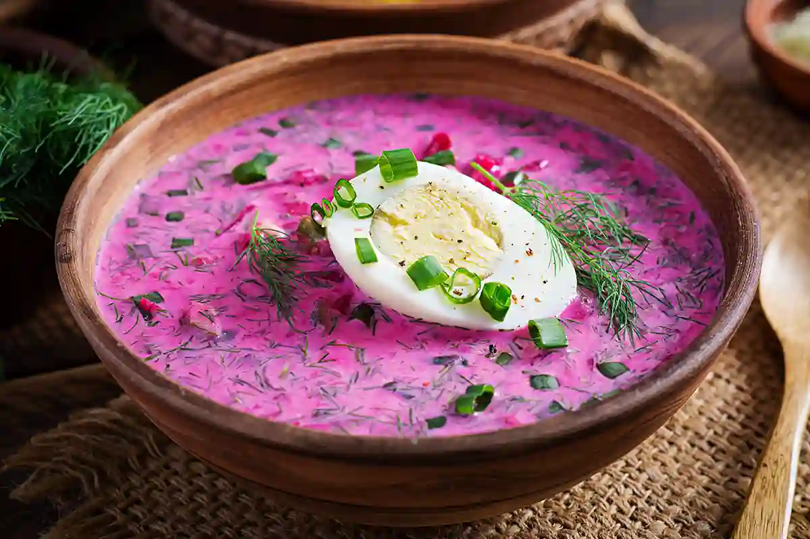

Lithuanian Cold Beet Soup

Description
Pink soup is a cold, refreshing pink beetroot soup that is a must when visiting Lithuania!
Ingredients
- 450g boiled & cooled beetroot straws
- 100g cucumber
- 6 spring onions
- 4 hard-boiled eggs
- 1 liter kefir
- Fresh dill to taste
- Salt to taste
For the side dish:
Steps
- Peel the potatoes and chop into bite-sized pieces. Place in a saucepan of boiling water, add a good pinch of salt and boil until a knife can easily pierce the flesh.
- While the potatoes are boiling, assemble the soup.
- Chop the eggs into small dice.
- Chop the scallions or onions leaves into 1 cm pieces.
- Finely chop the dill.
- Pour the kefir into a large bowl or saucepan and add the chopped ingredients, holding back some of the dill for garnish.
- Taste and season salt as required.
- Ladle the soup into bowls and sprinkle with the remaining dill.
- Serve the potatoes on a side plate so that they do not heat the soup.